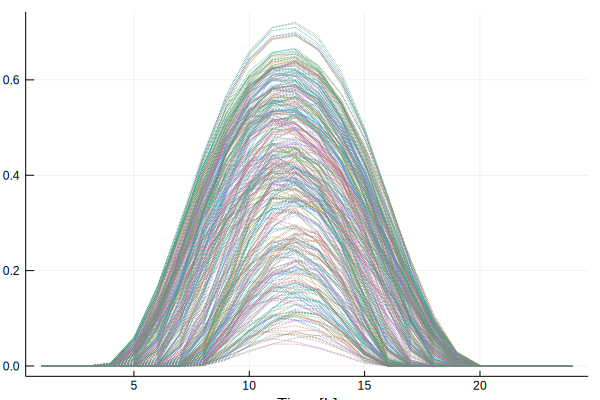

Load Data
Here, we describe how to load time-series data into the ClustData format for use in TimeSeriesClustering, and we describe how data is stored in ClustData. Data can be loaded from example data sets provided by us, or you can load your own data.
Load example data from TimeSeriesClustering
The example data can be loaded using the following function.
function load_timeseries_data(existing_data::Symbol;
region::String="none",
T::Int=24,
years::Array{Int,1}=[2016],
att::Array{String,1}=Array{String,1}())Return time series of example data sets as ClustData struct.
The choice of example data set is given by e.g. existing_data=:CEP-GER1. Example data sets are:
:DAM_CA: Hourly Day Ahead Market Electricity prices for California-Stanford 2015:DAM_GER: Hourly Day Ahead Market Electricity prices for Germany 2015:CEP_GER1: Hourly Wind, Solar, Demand data Germany one node:CEP_GER18: Hourly Wind, Solar, Demand data Germany 18 nodes
Optional inputs to load_timeseries_data:
- region-region descriptor
- T- Number of Segments
- years::Array{Int,1}= The years to be selected from the csv file as specified in
years column - att::Array{String,1}= The attributes to be loaded. If left empty, all attributes will be loaded.
In the following example, we use the function to load the hourly wind, solar, demand data for Germany for 1 node, and the other data can be loaded similarly. Note that more years are available for the two CEP data sets. The data can be found in the data folder.
julia> ts_input_data = load_timeseries_data(:CEP_GER1)
┌ Warning: `getindex(df::DataFrame, col_ind::ColumnIndex)` is deprecated, use `df[!, col_ind]` instead.
│ caller = #add_timeseries_data!#12(::Int64, ::Int64, ::Array{Int64,1}, ::Function, ::Dict{String,Array}, ::SubString{String}, ::DataFrames.DataFrame) at load_data.jl:132
└ @ TimeSeriesClustering ~/build/holgerteichgraeber/TimeSeriesClustering.jl/src/utils/load_data.jl:132
ClustData("none", [2016], 366, 24, Dict{String,Array}("solar-germany"=>[0.0 0.0 … 0.0 0.0; 0.0 0.0 … 0.0 0.0; … ; 0.0 0.0 … 0.0 0.0; 0.0 0.0 … 0.0 0.0],"wind-germany"=>[0.1429 0.1453 … 0.1329 0.1832; 0.1368 0.1758 … 0.1312 0.1802; … ; 0.1098 0.4955 … 0.1904 0.3122; 0.1254 0.4875 … 0.1865 0.3187],"el_demand-germany"=>[41913.0 39121.0 … 45343.0 45600.0; 40331.0 38271.0 … 44402.0 44332.0; … ; 44439.0 48859.0 … 50278.0 48988.0; 41257.0 45600.0 … 47534.0 47641.0]), [1.0, 1.0, 1.0, 1.0, 1.0, 1.0, 1.0, 1.0, 1.0, 1.0 … 1.0, 1.0, 1.0, 1.0, 1.0, 1.0, 1.0, 1.0, 1.0, 1.0], Dict{String,Array}("solar-germany"=>[0.0, 0.0, 0.0, 0.0, 0.0, 0.0, 0.0, 0.0, 0.0, 0.0 … 0.0, 0.0, 0.0, 0.0, 0.0, 0.0, 0.0, 0.0, 0.0, 0.0],"wind-germany"=>[0.0, 0.0, 0.0, 0.0, 0.0, 0.0, 0.0, 0.0, 0.0, 0.0 … 0.0, 0.0, 0.0, 0.0, 0.0, 0.0, 0.0, 0.0, 0.0, 0.0],"el_demand-germany"=>[0.0, 0.0, 0.0, 0.0, 0.0, 0.0, 0.0, 0.0, 0.0, 0.0 … 0.0, 0.0, 0.0, 0.0, 0.0, 0.0, 0.0, 0.0, 0.0, 0.0]), Dict{String,Array}("solar-germany"=>[1.0, 1.0, 1.0, 1.0, 1.0, 1.0, 1.0, 1.0, 1.0, 1.0 … 1.0, 1.0, 1.0, 1.0, 1.0, 1.0, 1.0, 1.0, 1.0, 1.0],"wind-germany"=>[1.0, 1.0, 1.0, 1.0, 1.0, 1.0, 1.0, 1.0, 1.0, 1.0 … 1.0, 1.0, 1.0, 1.0, 1.0, 1.0, 1.0, 1.0, 1.0, 1.0],"el_demand-germany"=>[1.0, 1.0, 1.0, 1.0, 1.0, 1.0, 1.0, 1.0, 1.0, 1.0 … 1.0, 1.0, 1.0, 1.0, 1.0, 1.0, 1.0, 1.0, 1.0, 1.0]), [1.0 1.0 … 1.0 1.0; 1.0 1.0 … 1.0 1.0; … ; 1.0 1.0 … 1.0 1.0; 1.0 1.0 … 1.0 1.0], [1, 2, 3, 4, 5, 6, 7, 8, 9, 10 … 357, 358, 359, 360, 361, 362, 363, 364, 365, 366])Load your own data
You can also load your own data. Use the load_timeseries_data function and specify the path where the data is located at (either a folder or the filename).
function load_timeseries_data(data_path::String;
region::String="none",
T::Int=24,
years::Array{Int,1}=[2016],
att::Array{String,1}=Array{String,1}())Return all time series as ClustData struct that are stored as csv files in the specified path.
- Loads
*.csvfiles in the folder or the filedata_path - Loads all attributes (all
*.csvfiles) if theatt-Array is empty or only the files specified inatt - The
*.csvfiles shall have the following structure and must have the same length:
| Timestamp | Year | [column names...] |
|---|---|---|
| [iterator] | [year] | [values] |
- The first column of a
.csvfile should be calledTimestampif it contains a time iterator - The second column should be called
Yearand contains the corresponding year - Each other column should contain the time series data. For one node systems, only one column is used; for an N-node system, N columns need to be used. In an N-node system, each column specifies time series data at a specific geolocation.
- Returns time series as ClustData struct
- The
.datafield of the ClustData struct is a Dictionary where each column in[file name].csvfile is the key (called"[file name]-[column name]").file nameshould correspond to the attribute name, andcolumn nameshould correspond to the node name.
Optional inputs to load_timeseries_data:
- region-region descriptor
- T- Number of Segments
- years::Array{Int,1}= The years to be selected from the csv file as specified in
years column - att::Array{String,1}= The attributes to be loaded. If left empty, all attributes will be loaded.
The data in your .csv file should be in the format Timestamp-Year-ColumnName as specified above. The files in the single node system GER1 and multi-node system GER18 give a good overview of how the data should be structured.
The path can be relative or absolute as in the following example
julia> ts_input_data = load_timeseries_data(normpath(joinpath(@__DIR__,"..","..","data","TS_GER_1"))) # relative path from the documentation file to the data folder
┌ Warning: `getindex(df::DataFrame, col_ind::ColumnIndex)` is deprecated, use `df[!, col_ind]` instead.
│ caller = #add_timeseries_data!#12(::Int64, ::Int64, ::Array{Int64,1}, ::Function, ::Dict{String,Array}, ::SubString{String}, ::DataFrames.DataFrame) at load_data.jl:132
└ @ TimeSeriesClustering ~/build/holgerteichgraeber/TimeSeriesClustering.jl/src/utils/load_data.jl:132
ClustData("none", [2016], 366, 24, Dict{String,Array}("solar-germany"=>[0.0 0.0 … 0.0 0.0; 0.0 0.0 … 0.0 0.0; … ; 0.0 0.0 … 0.0 0.0; 0.0 0.0 … 0.0 0.0],"wind-germany"=>[0.1429 0.1453 … 0.1329 0.1832; 0.1368 0.1758 … 0.1312 0.1802; … ; 0.1098 0.4955 … 0.1904 0.3122; 0.1254 0.4875 … 0.1865 0.3187],"el_demand-germany"=>[41913.0 39121.0 … 45343.0 45600.0; 40331.0 38271.0 … 44402.0 44332.0; … ; 44439.0 48859.0 … 50278.0 48988.0; 41257.0 45600.0 … 47534.0 47641.0]), [1.0, 1.0, 1.0, 1.0, 1.0, 1.0, 1.0, 1.0, 1.0, 1.0 … 1.0, 1.0, 1.0, 1.0, 1.0, 1.0, 1.0, 1.0, 1.0, 1.0], Dict{String,Array}("solar-germany"=>[0.0, 0.0, 0.0, 0.0, 0.0, 0.0, 0.0, 0.0, 0.0, 0.0 … 0.0, 0.0, 0.0, 0.0, 0.0, 0.0, 0.0, 0.0, 0.0, 0.0],"wind-germany"=>[0.0, 0.0, 0.0, 0.0, 0.0, 0.0, 0.0, 0.0, 0.0, 0.0 … 0.0, 0.0, 0.0, 0.0, 0.0, 0.0, 0.0, 0.0, 0.0, 0.0],"el_demand-germany"=>[0.0, 0.0, 0.0, 0.0, 0.0, 0.0, 0.0, 0.0, 0.0, 0.0 … 0.0, 0.0, 0.0, 0.0, 0.0, 0.0, 0.0, 0.0, 0.0, 0.0]), Dict{String,Array}("solar-germany"=>[1.0, 1.0, 1.0, 1.0, 1.0, 1.0, 1.0, 1.0, 1.0, 1.0 … 1.0, 1.0, 1.0, 1.0, 1.0, 1.0, 1.0, 1.0, 1.0, 1.0],"wind-germany"=>[1.0, 1.0, 1.0, 1.0, 1.0, 1.0, 1.0, 1.0, 1.0, 1.0 … 1.0, 1.0, 1.0, 1.0, 1.0, 1.0, 1.0, 1.0, 1.0, 1.0],"el_demand-germany"=>[1.0, 1.0, 1.0, 1.0, 1.0, 1.0, 1.0, 1.0, 1.0, 1.0 … 1.0, 1.0, 1.0, 1.0, 1.0, 1.0, 1.0, 1.0, 1.0, 1.0]), [1.0 1.0 … 1.0 1.0; 1.0 1.0 … 1.0 1.0; … ; 1.0 1.0 … 1.0 1.0; 1.0 1.0 … 1.0 1.0], [1, 2, 3, 4, 5, 6, 7, 8, 9, 10 … 357, 358, 359, 360, 361, 362, 363, 364, 365, 366])
julia> ts_input_data = load_timeseries_data("/home/username/yourpathtofolder") # absolute path on Linux/Mac
ERROR: The path /home/username/yourpathtofolder is neither recognized as a directory nor as a file
julia> ts_input_data = load_timeseries_data("C:\\Users\\Username\\yourpathtofolder") # absolute path on Windows
ERROR: The path C:\Users\Username\yourpathtofolder is neither recognized as a directory nor as a fileClustData struct
The ClustData struct is at the core of TimeSeriesClustering. It contains the temporal input data, and also relevant information that can be easily used in the formulation of the optimization problem.
TimeSeriesClustering.ClustData — Type. ClustData <: TSDataContains time series data by attribute (e.g. wind, solar, electricity demand) and respective information.
Fields:
- region::String: optional information to specify the region data belongs to
- K::Int: number of periods
- T::Int: time steps per period
- data::Dict{String,Array}: Dictionary with an entry for each attribute
[file name (attribute: e.g technology)]-[column name (node: e.g. location)], Each entry of the dictionary is a 2-dimensionaltime-steps T x periods K-Array holding the data - weights::Array{Float64,2}: 1-dimensional
periods K-Array with the absolute weight for each period. The weight of a period corresponds to the number of days it representes. E.g. for a year of 365 days, sum(weights)=365 - mean::Dict{String,Array}: Dictionary with a entry for each attribute
[file name (e.g technology)]-[column name (e.g. location)], Each entry of the dictionary is a 1-dimensionalperiods K-Array holding the shift of the mean. This is used internally for normalization. - sdv::Dict{String,Array}: Dictionary with an entry for each attribute
[file name (e.g technology)]-[column name (e.g. location)], Each entry of the dictionary is a 1-dimensionalperiods K-Array holding the standard deviation. This is used internally for normalization. - delta_t::Array{Float64,2}: 2-dimensional
time-steps T x periods K-Array with the temporal duration Δt for each timestep. The default is that all timesteps have the same length. - k_ids::Array{Int}: 1-dimensional
original periods I-Array with the information, which original period is represented by which period K. E.g. if the data is a year of 365 periods, the array has length 365. If an original period is not represented by any period within this ClustData the entry will be0.
Note that K and T can be used to construct sets that define the temporal structure of the optimization problem, and that weights can be used to weight the representative periods in the objective function of the optimization problem. k_ids can be used to implement seasonal storage formulations for long-term energy systems optimization problems. delta_t can be used to implement within-period segmentation.
Example data
This shows the solar data as an example.
using TimeSeriesClustering
ts_input_data = load_timeseries_data(:CEP_GER1; T=24, years=[2016])
using Plots
plot(ts_input_data.data["solar-germany"], legend=false, linestyle=:dot, xlabel="Time [h]", ylabel="Solar availability factor [%]")
savefig("load_timeseries_data.svg")┌ Warning: `getindex(df::DataFrame, col_ind::ColumnIndex)` is deprecated, use `df[!, col_ind]` instead.
│ caller = #add_timeseries_data!#12(::Int64, ::Int64, ::Array{Int64,1}, ::Function, ::Dict{String,Array}, ::SubString{String}, ::DataFrames.DataFrame) at load_data.jl:132
└ @ TimeSeriesClustering ~/build/holgerteichgraeber/TimeSeriesClustering.jl/src/utils/load_data.jl:132
/home/travis/.julia/packages/GR/ZI5OE/src/../deps/gr/bin/gksqt: error while loading shared libraries: libQt5Widgets.so.5: cannot open shared object file: No such file or directory
connect: Connection refused
GKS: can't connect to GKS socket application
Did you start 'gksqt'?
GKS: Open failed in routine OPEN_WS
GKS: GKS not in proper state. GKS must be either in the state WSOP or WSAC in routine ACTIVATE_WS